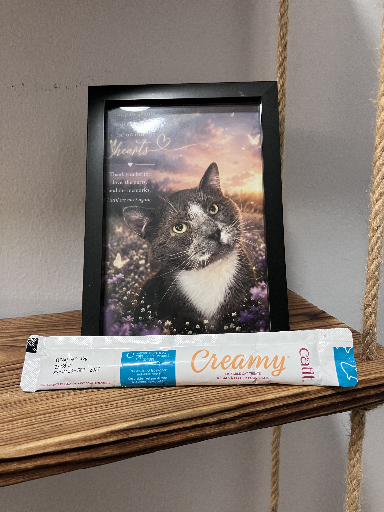
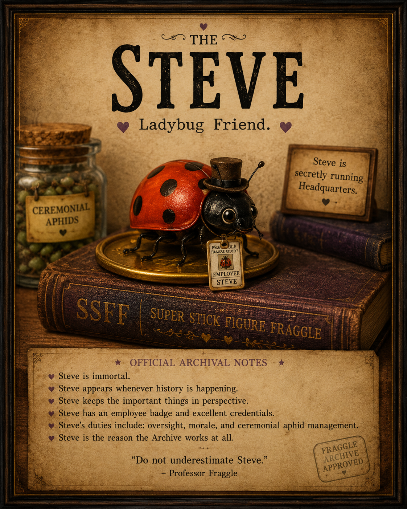

The Museum of the Archives
The Archives preserve more than stories. They preserve the objects, records, artifacts, and strange little pieces of history that made those stories possible.
The Sacred Yellow Plate

An artifact of considerable importance and questionable explanation. Its history is carefully preserved within the Archives.
Emergency Creamy

A highly regulated emergency resource, maintained according to Archive protocol and deployed only when circumstances become sufficiently creamy.
The Fraggle Archive Charter

The founding document of the Archives, establishing their purpose, principles, and commitment to preserving the stories that matter.
The Archives Map
A record of the Archives headquarters, including the Great Hall, Restricted Section, Department of Heroics, Creamy Vault, and other important locations.
Dr. Vacuum Cleaner
An object of unusual significance whose presence within the Archives has yet to receive a completely satisfactory explanation.
Steve – Ladybug Friend

A small but persistent member of Archive history. Steve has appeared during important events and is believed to be considerably more involved in Archive operations than anyone officially acknowledges.
Sacred Ashes

A memorial artifact preserved with care and reverence. Some things are kept because they are historically important. Others are kept because someone mattered.
The Evidence of Care
Not every artifact in the Archives is grand. Some are simply the physical evidence of the ordinary acts of care that mattered enormously.
The Gloves

The gloves used while caring for Fraggle — preserved because sometimes the physical objects connected to a life matter just as much as the photographs and stories.
The Cone

The indignity. The bravery. The unmistakable symbol of a tiny cat who was trying very hard to heal.